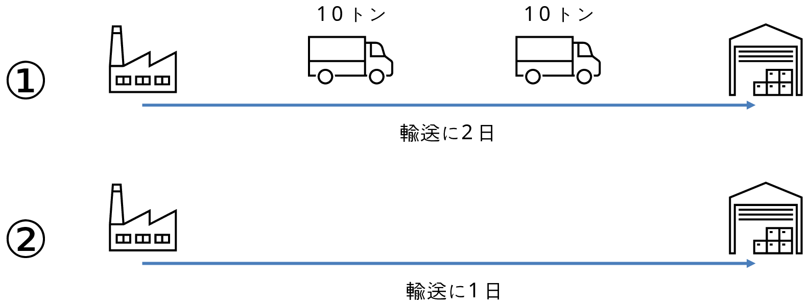
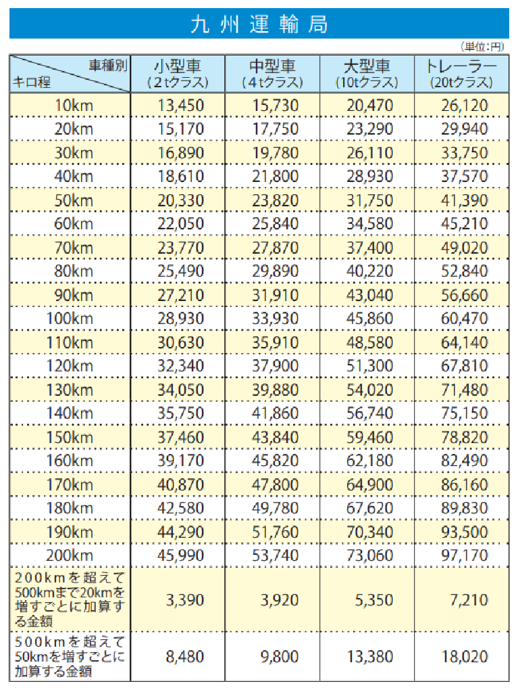
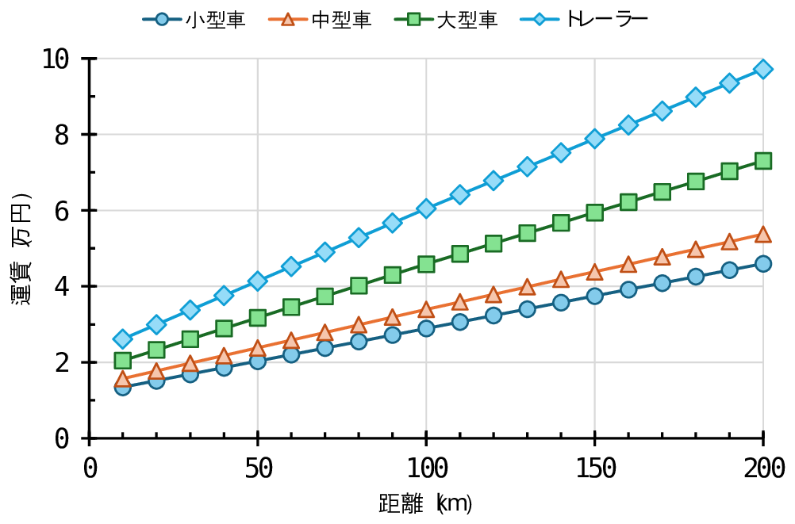

第4部：未来のためのビジネスモデル
（成功事例の研究）
課題が見えたなら、次は「解決策」を考える番です。アパレルファッション業界の未来を担うのは、感情論ではなく、データと知恵を武器に立ち向かうプロフェッショナルたち。
日本の伝統技術を守りながらITを駆使する企業や、世界最速の物流システムを築き上げた企業。それぞれの戦略には、第3部で学んだ問題を解決するヒントが詰まっています。憧れのブランドが仕掛ける「未来のためのビジネスモデル」を、データサイエンスの視点で解き明かしましょう！
●職人の技とITの融合（タビオ）
参考サイトの記事を読んで、「職人のこだわり × 1足もムダにしないITの魔法」について話し合ってみましょう。どのような魔法がかけられているでしょうか？そして、この魔法は、第3部で見てきた問題とどのように関係するのでしょうか？
・参考サイト
未来を創るニッポンの底力：タビオ株式会社 越智勝寛（SUPER CEO）
●スピードの魔術師（ZARA）
参考サイトの記事を読んで、「流行を15日で形にする！世界を驚かせるスピードのヒミツ」を解き明かしましょう。どのようなヒミツが隠されているでしょうか？そして、このヒミツは、第3部で見てきた問題とどのように関係するのでしょうか？
・参考サイト
ザラがサプライチェーンを世界クラスの製品に変えた方法（LinkedIn）
○ワーク（データ分析）輸送スピードが在庫に与える影響
毎日、工場から倉庫に10トンの貨物を輸送する必要がある場合を考えましょう。
図の①の場合は、工場から倉庫までの輸送に2日間かかるために、工場と倉庫の間には2台のトラックが走っていることになります。つまり、輸送中の在庫量は、合計20トンとなります。
では、②のように輸送スピードを2倍に、工場から倉庫まで1日で輸送できるようになった場合は、どのようになるでしょうか？工場と倉庫の間には何台のトラックが走っていて、輸送中の在庫量はどうなるでしょうか？
輸送スピードが速くなる影響は、燃料を沢山消費することによる輸送コストの上昇だけでなく、商品の在庫にも影響を与えることを確認しましょう。
そして、流行の変化の激しいファストファッションの場合に、高速な輸送がどのような効果をもたらすのか、スピードのヒミツについて考えてみましょう。

●定番品を安く（ユニクロ）
参考サイトの記事を読んで、ZARAの取り組みとの対比から「究極のふだん着を、世界中の人へ」届けるために、ユニクロが取り組む「圧倒的な効率化の裏側」に迫りましょう。どのような取り組みが行われているでしょうか？そして、この取り組みは、第3部で見てきた問題とどのように関係するのでしょうか？
・参考サイト
「ユニクロ対ZARA」ファストファッションの覇権を争う２社のサプライチェーン戦略（LOCAL LOGITEX）
ユニクロは、服のイノベーションを起こし続ける（ファーストリテイリング）
○ワーク（データ分析）輸送における運賃のスケールメリット
スケールメリットの一例として、車両の大型による費用の削減効果をみてみましょう。
トラックの運賃は、輸送距離が長くなるほど、また、車両が大型するほど、右のグラフから分かるように運賃が高くなっています。
これを、輸送距離100kmで、貨物を満載で輸送すると、1トンあたりの運賃はどのようになるでしょうか？横軸を「車両の最大積載量」とし、縦軸を「1トンあたりの運賃」として、グラフを描いてみよう。


出典：国土交通省
参考サイト
●3社の事例を振り返ってみましょう！
3社の事例を調べてみて、どう感じましたか？ 「スピード重視のZARA」と「品質と効率のユニクロ」、そして「職人の技とITを掛け合わせたタビオ」。それぞれ全く違う戦い方をしていましたね。
ここで大事なのは、「どれが一番正しいか」ではなく、「どのブランドが、何を解決しようとしているか」です。
・ZARAは「流行が過ぎ去る」という問題を、「スピード（SCM）」で解決しました。
・タビオは「ムダな在庫」という問題を、「精密なデータ管理」で解決しました。
共通しているのは、どの会社も「勘」ではなく、「データ」を根拠に、自分たちのサプライチェーンを最適化しているということ。皆さんがこれから考える「理想のショップ」でも、何を一番に優先したいかを決めることが、データ活用の第一歩になります。